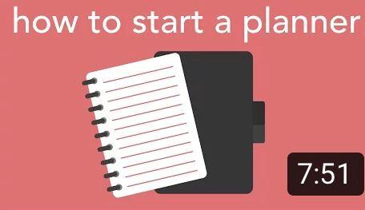
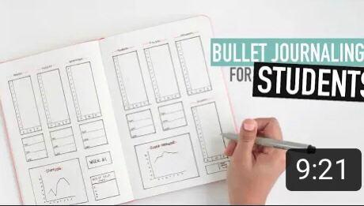

Having a weekly planner is essential for productivity as there are
various benefits of weekly planner.
Here we are discussing some of the key ones, to help you become more productive.
Here are 5 reasons why the best weekly planner will help you get things done on time and enjoy your daily activities more:
- You Can Keep Track of All Responsibilities at Any Moment
- You Get Used to Focus on Important Activities
- You Can Share Your Schedule with Other People
- You’ll Increase Your Productivity
- You’ll have a Feeling of Accomplishment
Time management is one of the biggest challenges even for the most talented and motivated people.
It is a fact that the productivity levels vary from day to day, and modern tools that are supposed to help us work better and faster can be turned against us – think of all the time you lose checking your email every day or giving up to guilty pleasures like shopping online.
Sounds familiar?
If you said yes, then a weekly planner like FOXplanner can be of great help. It is effective in helping you stay focused on your most important tasks, instead of showing you how much work you still need to do in a short time.
| YouTube |
Name |
|
How I Use My Planner | Be Productive, Reduce Stress & Stay Organized |
|  |
How to start a planner |
|  |
Bullet Journaling FOR STUDENTS | Back-To-School |